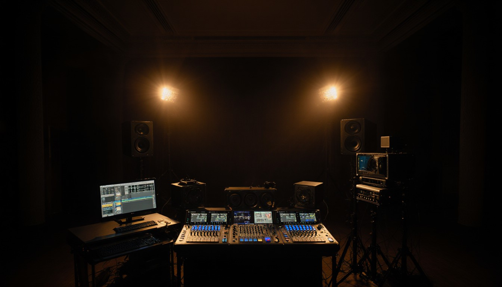

Corporate Events and Conferences
We Obsess Over the Details So You Can Focus on the Message.
In the corporate world, technical glitches aren't just annoying — they impact your brand, your credibility, and your bottom line. When the CEO steps up to present, the slides must appear on cue. When the panel discussion begins, every voice must be heard clearly. When you're streaming to remote attendees, the connection must be rock-solid.
We bring a "broadcast mindset" to your corporate events. That means we plan for every scenario, test every connection, and execute with precision. Whether it's a board meeting for 10 or a conference for 500, we ensure the run-of-show is executed to the second.
Strategy and Planning: Getting It Right Before the Doors Open
Great corporate events don't happen by accident. They're the result of meticulous pre-production planning. We start by understanding your goals: What's the message? Who's the audience? What's the desired outcome? Then we reverse-engineer the technical solution to support that vision.
We conduct site surveys, test internet bandwidth for streaming, and create detailed diagrams of every cable run. We build redundancy into critical systems — backup microphones, backup projectors, backup internet connections. Because in corporate events, "Plan B" isn't optional; it's mandatory.
"The best AV is invisible. When everything works perfectly, nobody notices the technology — they only remember the message."
Execution: Trust in the Team
On event day, our crew arrives early — often hours before your first attendee. We're setting levels, checking sight lines, and running through the script. When your presenters arrive, we're ready with confidence monitors, backup slides loaded, and a calm, professional demeanor that puts everyone at ease.
During the event, we're the silent partner in the room. You won't see us scrambling or hear us troubleshooting. We communicate via headset, make adjustments on the fly, and ensure every transition is handled. Our job is to make you look good — and we take that responsibility seriously.
Doing the Right Things: Our Commitment to Excellence
We don't cut corners. Ever. That means using professional-grade equipment, not consumer gear. It means arriving with backup cables, adapters, and contingency plans. It means treating your event like it's the most important one we've ever done — because to you, it is.
We're not just technicians; we're problem-solvers. When the venue's internet fails, we have a cellular backup. When a presenter's laptop won't connect, we have adapters for every port. When the schedule changes at the last minute, we adapt without breaking a sweat. That's what genuine technical preparation looks like.
How Pricing Works.
We don't publish starting-at prices. Here's why.
A corporate annual meeting with one keynote isn't the same as a three-day conference with breakouts. A product launch with a live demo isn't the same as a Friday town hall over Zoom. Pricing a job honestly means looking at the venue, the program structure, whether there's a livestream, and the gear it actually takes — not pulling a number off a page.
What we will promise: the proposal we send you is itemized, transparent, and complete. Equipment, crew, hours, travel — every line. No hidden fees, no day-of surprises. If there's a way to do your event for less without compromising what matters, we'll name it. If doing it right costs more than you hoped, we'll tell you that too, early enough for you to make a real decision.
The discovery call takes about 30 minutes. By the end of it, you'll have a clear sense of whether we're the right fit — and a ballpark range to work with long before any paperwork shows up.
- Number of speakers and presenters
- Audience size — in-room and remote
- Breakout rooms and parallel tracks
- Video and livestream requirements
- Rehearsal and tech-check time
- Multi-day events and overnight logistics